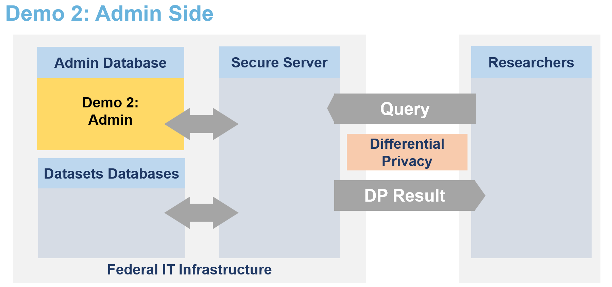

Secure Data Disclosure on Kubernetes: Server Administration
This notebook showcases how a data owner could add and make their data available to certain user. We will do this in a step by step fashion.
[2]:
from IPython.display import Image
Image(filename="images/image_demo_admin_side.png", width=800)
[2]:

Start of DEMO
Since the service has been deployed in the demo 1, the URL should be accessible.
[1]:
URL = 'https://lomas-server.lab.sspcloud.fr/'
Administering the service by accessing the mongoDB
[2]:
import os
os.chdir('../lomas_server/')
Let’s add a formatting function to have more readable outputs.
[3]:
from ast import literal_eval
import subprocess
def run(command, to_dict=False):
command = f"python mongodb_admin.py {command}"
completed_process = subprocess.run(command, shell=True, text=True, capture_output=True)
output = completed_process.stdout
if to_dict:
return literal_eval(output)
else:
output = output.rstrip('\n').replace(r'\n', '\n')
return print(output)
Preparing the database
Some existing options
[4]:
run("--help") # !python mongodb_admin.py --help
usage: MongoDB administration script for the user database [-h]
{add_user,add_user_with_budget,del_user,add_dataset_to_user,del_dataset_to_user,set_budget_field,set_may_query,show_user,create_users_collection,add_dataset,add_datasets,drop_collection,show_collection}
...
options:
-h, --help show this help message and exit
subcommands:
{add_user,add_user_with_budget,del_user,add_dataset_to_user,del_dataset_to_user,set_budget_field,set_may_query,show_user,create_users_collection,add_dataset,add_datasets,drop_collection,show_collection}
user database administration operations
add_user add user to users collection
add_user_with_budget
add user with budget to users collection
del_user delete user from users collection
add_dataset_to_user
add dataset with initialized budget values for a user
del_dataset_to_user
delete dataset for user in users collection
set_budget_field set budget field to given value for given user and
dataset
set_may_query set may query field to given value for given user
show_user show all metadata of user
create_users_collection
create users collection from yaml file
add_dataset set in which database the dataset is stored
add_datasets create dataset to database type collection
drop_collection delete collection from database
show_collection print the users collection
Cleaning the database
[5]:
run("drop_collection --collection datasets")
run("drop_collection --collection metadata")
run("drop_collection --collection users")
Deleted collection datasets.
Deleted collection metadata.
Deleted collection users.
Datasets (add and drop)
For each dataset, 2 informations are required:
the type of database in which the dataset is stored
a path to the metadata of the dataset (stored as a yaml file).
Metadata are expected to be in the same format as SmartnoiseSQL dictionary format, where among other, there is information about all the available columns, their type, bound values (see Smartnoise page for more details).
Add one dataset
We can add one dataset with its name, database type and path to medata file:
[6]:
run("add_dataset -d PENGUIN -db REMOTE_HTTP_DB -mp ../data/collections/metadata/penguin_metadata.yaml")
Added dataset PENGUIN with database REMOTE_HTTP_DB and metadata from ../data/collections/metadata/penguin_metadata.yaml.
[7]:
run("add_datasets --path ../data/collections/dataset_collection.yaml -c")
Cleaning done.
Added datasets collection from yaml at ../data/collections/dataset_collection.yaml.
Added metadata of IRIS dataset.
Added metadata of PENGUIN dataset.
Added metadata of TITANIC dataset.
Added metadata of FSO_INCOME_SYNTHETIC dataset.
Users
Adding users
[8]:
run("add_user_with_budget --user 'Dr. Antartica' --dataset 'PENGUIN' --epsilon 10.0 --delta 0.001")
Added access to user Dr. Antartica with dataset PENGUIN, budget epsilon 10.0 and delta 0.001.
[9]:
run("set_budget_field --user 'Dr. Antartica' --dataset 'PENGUIN' --field initial_epsilon --value 20.0")
Set budget of Dr. Antartica for dataset PENGUIN of initial_epsilon to 20.0.
We add the data based on a yaml file:
[10]:
run("create_users_collection --path ../data/collections/user_collection.yaml -c")
Cleaning done.
Added user data from yaml at ../data/collections/user_collection.yaml.
[11]:
run("show_collection --collection queries_archives")
[]
Stopping the service: Let’s not do it right now!
To tear down the service, we simply execute the command helm uninstall lomas-service
[11]:
!helm uninstall lomas-service
release "sdd-service" uninstalled